2022 Higher Physics - Paper 2 questions
Source: Scottish Qualifications Authority (SQA) / Qualifications Scotland. This is a StemInteract HTML companion, not an official HTML edition. Selectable text is supplied alongside original page images. Use the images or original PDF for equations, powers, fractions, vector notation, tables and diagrams; text extraction cannot fully preserve mathematical layout.
Jump to a question
PDF page 1
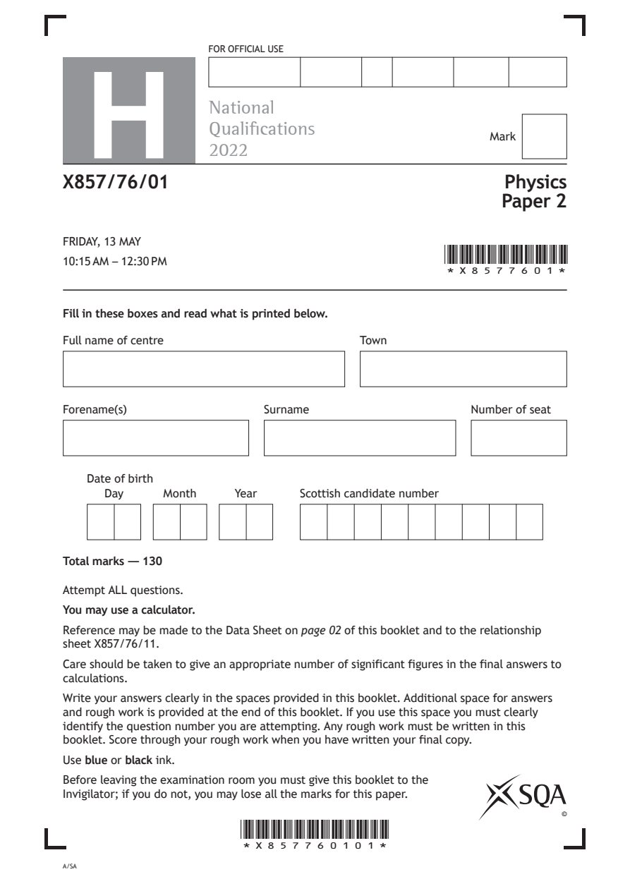
Selectable page text
FOR OFFICIAL USE
H
National
Qualications
Mark
2022
X857/76/01 Physics
Paper 2
FRIDAY, 13 MAY
10:15 AM – 12:30 PM
*X8577601*
Fill in these boxes and read what is printed below.
Full name of centre Town
Forename(s) Surname Number of seat
Date of birth
Day Month Year Scottish candidate number
Total marks — 130
Attempt ALL questions.
You may use a calculator.
Reference may be made to the Data Sheet on page 02 of this booklet and to the relationship
sheet X857/76/11.
Care should be taken to give an appropriate number of significant figures in the final answers to
calculations.
Write your answers clearly in the spaces provided in this booklet. Additional space for answers
and rough work is provided at the end of this booklet. If you use this space you must clearly
identify the question number you are attempting. Any rough work must be written in this
booklet. Score through your rough work when you have written your final copy.
Use blue or black ink.
Before leaving the examination room you must give this booklet to the
Invigilator; if you do not, you may lose all the marks for this paper.
©
*X857760101*
A/SAPDF page 2
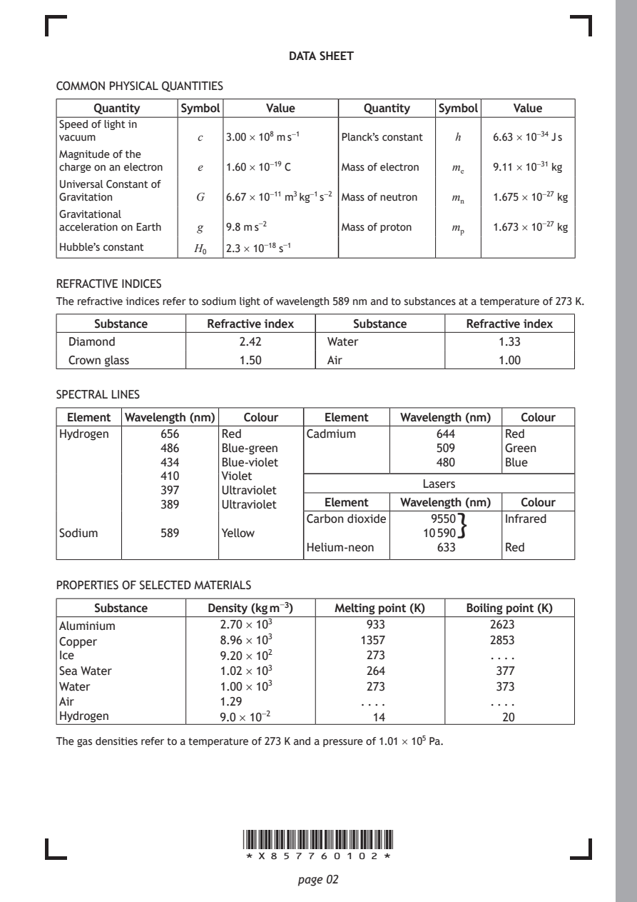
Selectable page text
DATA SHEET
COMMON PHYSICAL QUANTITIES
Quantity Symbol Value Quantity Symbol Value
Speed of light in
vacuum c 3.00 × 10⁸ m s⁻¹ Planck’s constant h 6.63 × 10⁻³⁴ J s
Magnitude of the
charge on an electron e 1.60 × 10⁻¹⁹ C Mass of electron mₑ 9.11 × 10⁻³¹ kg
Universal Constant of
Gravitation G 6.67 × 10⁻¹¹ m³ kg⁻¹ s⁻² Mass of neutron mₙ 1.675 × 10⁻²⁷ kg
Gravitational
acceleration on Earth g 9.8 m s⁻² Mass of proton mₚ 1.673 × 10⁻²⁷ kg
Hubble’s constant H₀ 2.3 × 10⁻¹⁸ s⁻¹
REFRACTIVE INDICES
The refractive indices refer to sodium light of wavelength 589 nm and to substances at a temperature of 273 K.
Substance Refractive index Substance Refractive index
Diamond 2.42 Water 1.33
Crown glass 1.50 Air 1.00
SPECTRAL LINES
Element Wavelength (nm) Colour Element Wavelength (nm) Colour
Hydrogen 656 Red Cadmium 644 Red
486 Blue-green 509 Green
434 Blue-violet 480 Blue
410 Violet
Lasers
397 Ultraviolet
389 Ultraviolet Element Wavelength (nm) Colour
Carbon dioxide 9550} Infrared
Sodium 589 Yellow 10 590
Helium-neon 633 Red
PROPERTIES OF SELECTED MATERIALS
Substance Density (kg m⁻³) Melting point (K) Boiling point (K)
Aluminium 2.70 × 10³ 933 2623
Copper 8.96 × 10³ 1357 2853
Ice 9.20 × 10² 273 . . . .
Sea Water 1.02 × 10³ 264 377
Water 1.00 × 10³ 273 373
Air 1.29 . . . . . . . .
Hydrogen 9.0 × 10⁻² 14 20
The gas densities refer to a temperature of 273 K and a pressure of 1.01 × 10⁵ Pa.
*X857760102*
page 02PDF page 3

Selectable page text
[Turn over for next question
DO NOT WRITE ON THIS PAGE
*X857760103*
page 03PDF page 4
Paper 2, Question 1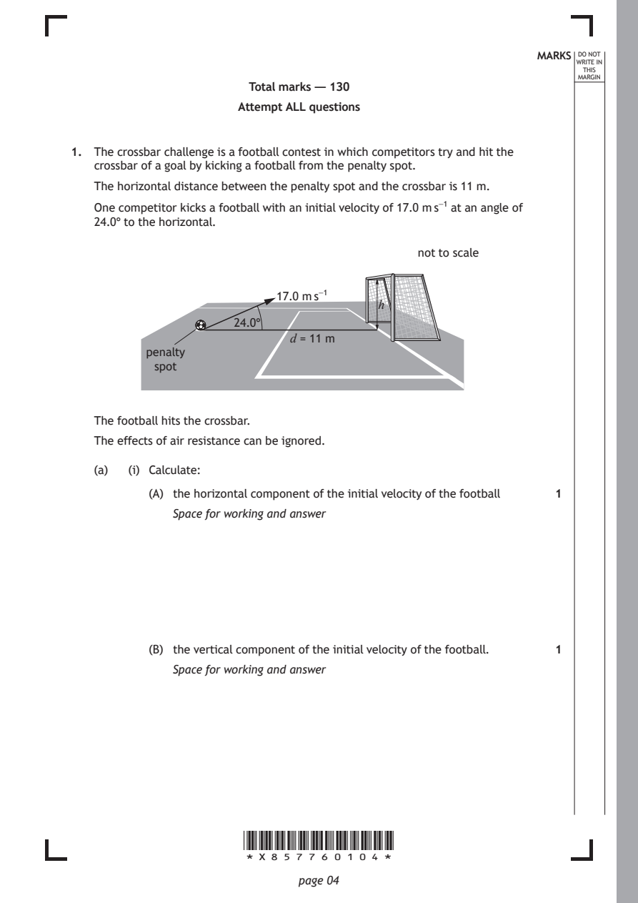
Selectable page text
MARKS _{W}^{D}_{R}^{O}_{I} _{T}^{N}OT
E IN
THIS
MARGIN
Total marks — 130
Attempt ALL questions
1. The crossbar challenge is a football contest in which competitors try and hit the
crossbar of a goal by kicking a football from the penalty spot.
The horizontal distance between the penalty spot and the crossbar is 11 m.
One competitor kicks a football with an initial velocity of 17.0 m s⁻¹ at an angle of
24.0° to the horizontal.
not to scale
17.0 m s⁻¹
h
24.0°
d = 11 m
penalty
spot
The football hits the crossbar.
The effects of air resistance can be ignored.
(a) (i) Calculate:
(A) the horizontal component of the initial velocity of the football 1
Space for working and answer
(B) the vertical component of the initial velocity of the football. 1
Space for working and answer
*X857760104*
page 04PDF page 5
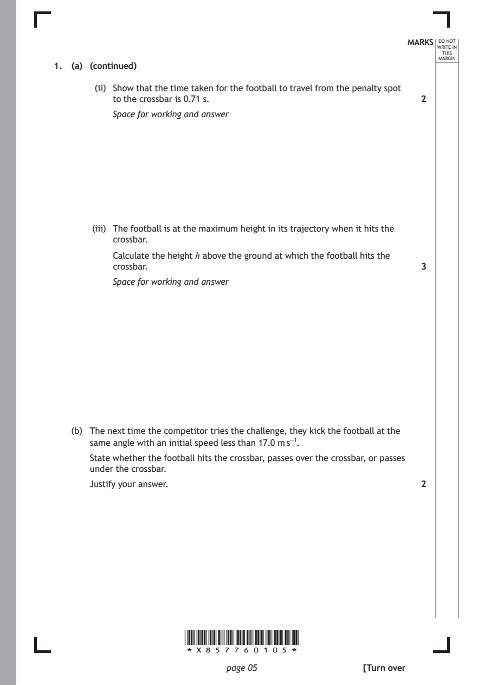
Selectable page text
MARKS _{W}^{D}_{R}^{O}_{I} _{T}^{N}OT
E IN
THIS
MARGIN
1. (a) (continued)
(ii) Show that the time taken for the football to travel from the penalty spot
to the crossbar is 0.71 s. 2
Space for working and answer
(iii) The football is at the maximum height in its trajectory when it hits the
crossbar.
Calculate the height h above the ground at which the football hits the
crossbar. 3
Space for working and answer
(b) The next time the competitor tries the challenge, they kick the football at the
same angle with an initial speed less than 17.0 m s⁻¹.
State whether the football hits the crossbar, passes over the crossbar, or passes
under the crossbar.
Justify your answer. 2
*X857760105*
page 05 [Turn overPDF page 6
Paper 2, Question 2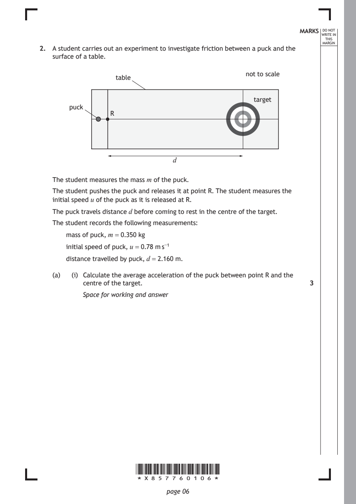
Selectable page text
MARKS _{W}^{D}_{R}^{O}_{I} _{T}^{N}OT
E IN
THIS
MARGIN
2. A student carries out an experiment to investigate friction between a puck and the
surface of a table.
not to scale
table
target
puck
R
d
The student measures the mass m of the puck.
The student pushes the puck and releases it at point R. The student measures the
initial speed u of the puck as it is released at R.
The puck travels distance d before coming to rest in the centre of the target.
The student records the following measurements:
mass of puck, m = 0.350 kg
initial speed of puck, u = 0.78 m s⁻¹
distance travelled by puck, d = 2.160 m.
(a) (i) Calculate the average acceleration of the puck between point R and the
centre of the target. 3
Space for working and answer
*X857760106*
page 06PDF page 7
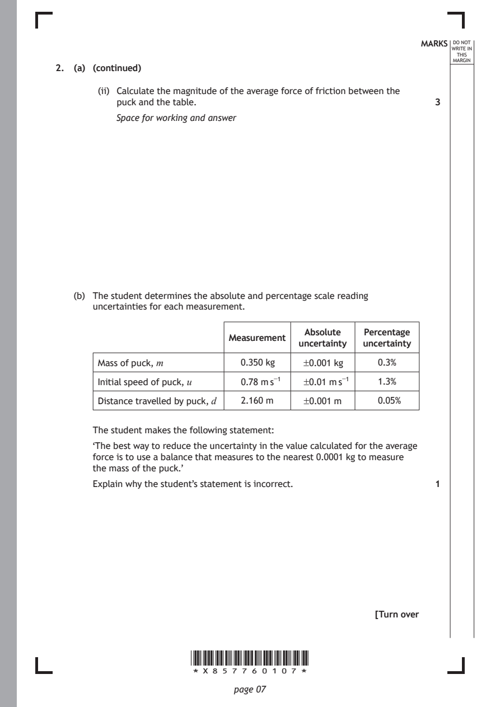
Selectable page text
MARKS _{W}^{D}_{R}^{O}_{I} _{T}^{N}OT
E IN
THIS
MARGIN
2. (a) (continued)
(ii) Calculate the magnitude of the average force of friction between the
puck and the table. 3
Space for working and answer
(b) The student determines the absolute and percentage scale reading
uncertainties for each measurement.
Absolute Percentage
Measurement
uncertainty uncertainty
Mass of puck, m 0.350 kg ±0.001 kg 0.3%
Initial speed of puck, u 0.78 m s⁻¹ ±0.01 m s⁻¹ 1.3%
Distance travelled by puck, d 2.160 m ±0.001 m 0.05%
The student makes the following statement:
‘The best way to reduce the uncertainty in the value calculated for the average
force is to use a balance that measures to the nearest 0.0001 kg to measure
the mass of the puck.’
Explain why the student’s statement is incorrect. 1
[Turn over
*X857760107*
page 07PDF page 8
Paper 2, Question 3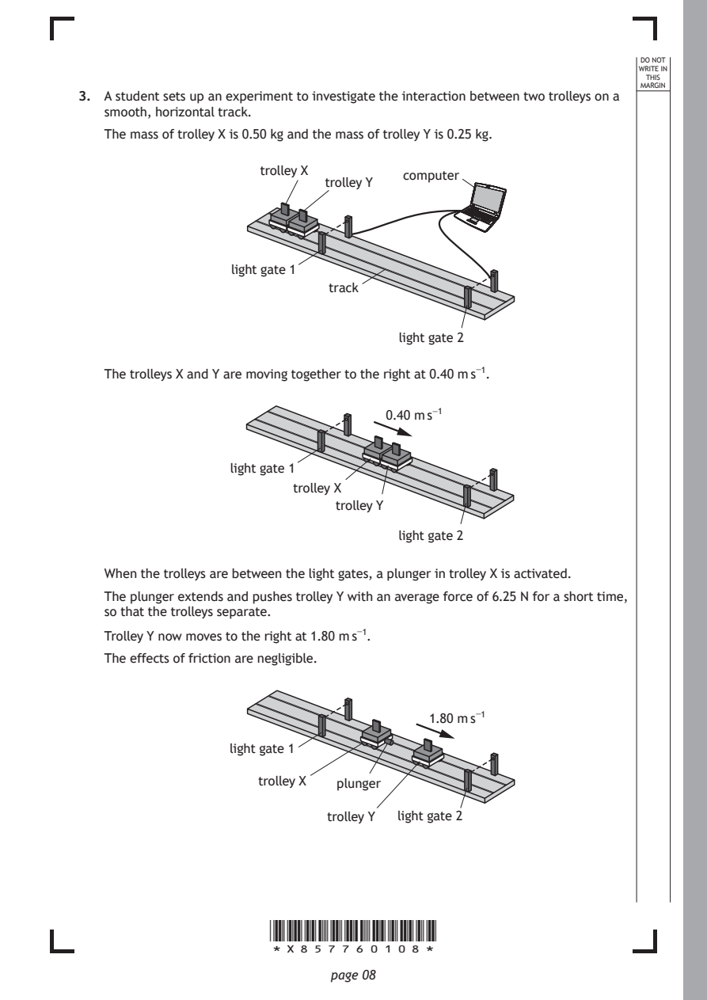
Selectable page text
DO NOT
WRITE IN
THIS
ARGIN
3. A student sets up an experiment to investigate the interaction between two trolleys on a ^{M}
smooth, horizontal track.
The mass of trolley X is 0.50 kg and the mass of trolley Y is 0.25 kg.
trolley X
computer
trolley Y
light gate 1
track
light gate 2
The trolleys X and Y are moving together to the right at 0.40 m s⁻¹.
0.40 m s⁻¹
light gate 1
trolley X
trolley Y
light gate 2
When the trolleys are between the light gates, a plunger in trolley X is activated.
The plunger extends and pushes trolley Y with an average force of 6.25 N for a short time,
so that the trolleys separate.
Trolley Y now moves to the right at 1.80 m s⁻¹.
The effects of friction are negligible.
1.80 m s⁻¹
light gate 1
trolley X plunger
trolley Y light gate 2
*X857760108*
page 08PDF page 9
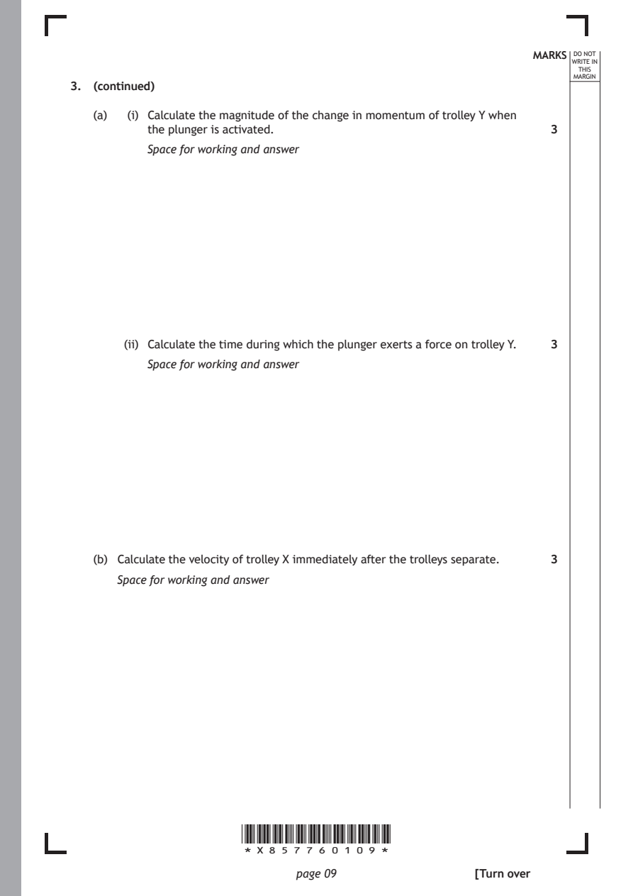
Selectable page text
MARKS _{W}^{D}_{R}^{O}_{I} _{T}^{N}OT
E IN
THIS
MARGIN
3. (continued)
(a) (i) Calculate the magnitude of the change in momentum of trolley Y when
the plunger is activated. 3
Space for working and answer
(ii) Calculate the time during which the plunger exerts a force on trolley Y. 3
Space for working and answer
(b) Calculate the velocity of trolley X immediately after the trolleys separate. 3
Space for working and answer
*X857760109*
page 09 [Turn overPDF page 10
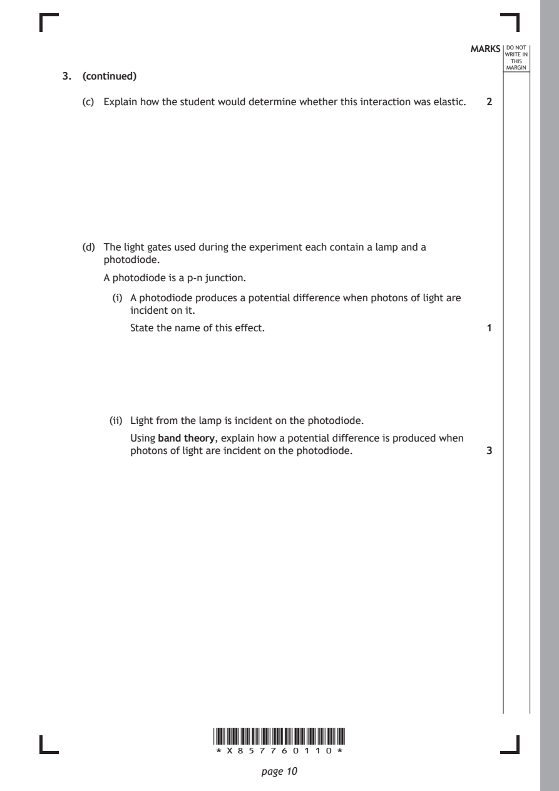
Selectable page text
MARKS _{W}^{D}_{R}^{O}_{I} _{T}^{N}OT
E IN
THIS
MARGIN
3. (continued)
(c) Explain how the student would determine whether this interaction was elastic. 2
(d) The light gates used during the experiment each contain a lamp and a
photodiode.
A photodiode is a p-n junction.
(i) A photodiode produces a potential difference when photons of light are
incident on it.
State the name of this effect. 1
(ii) Light from the lamp is incident on the photodiode.
Using band theory, explain how a potential difference is produced when
photons of light are incident on the photodiode. 3
*X857760110*
page 10PDF page 11

Selectable page text
[Turn over for next question
DO NOT WRITE ON THIS PAGE
*X857760111*
page 11PDF page 12
Paper 2, Question 4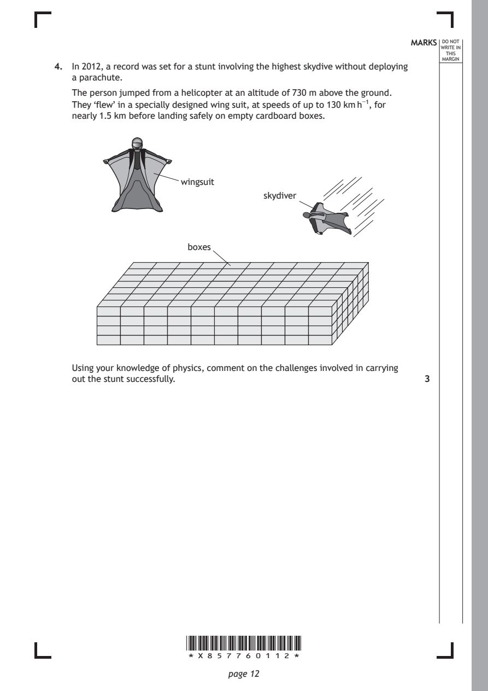
Selectable page text
MARKS _{W}^{D}_{R}^{O}_{I} _{T}^{N}OT
E IN
THIS
MARGIN
4. In 2012, a record was set for a stunt involving the highest skydive without deploying
a parachute.
The person jumped from a helicopter at an altitude of 730 m above the ground.
They ‘flew’ in a specially designed wing suit, at speeds of up to 130 km h⁻¹, for
nearly 1.5 km before landing safely on empty cardboard boxes.
wingsuit
skydiver
boxes
Using your knowledge of physics, comment on the challenges involved in carrying
out the stunt successfully. 3
*X857760112*
page 12PDF page 13
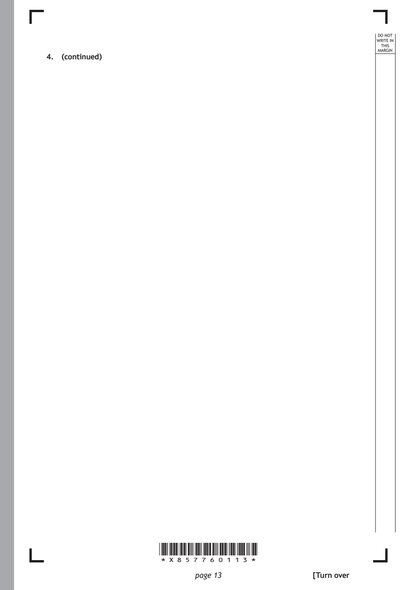
Selectable page text
DO NOT
WRITE IN
THIS
MARGIN
4. (continued)
*X857760113*
page 13 [Turn overPDF page 14
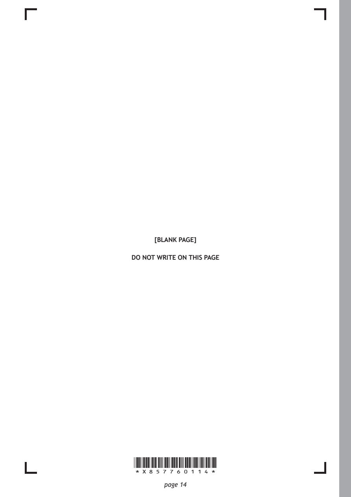
Selectable page text
[BLANK PAGE]
DO NOT WRITE ON THIS PAGE
*X857760114*
page 14PDF page 15
Paper 2, Question 5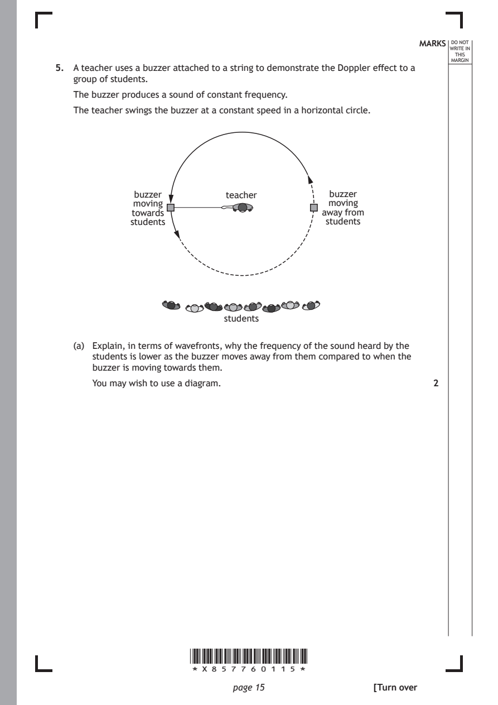
Selectable page text
MARKS _{W}^{D}_{R}^{O}_{I} _{T}^{N}OT
E IN
THIS
MARGIN
5. A teacher uses a buzzer attached to a string to demonstrate the Doppler effect to a
group of students.
The buzzer produces a sound of constant frequency.
The teacher swings the buzzer at a constant speed in a horizontal circle.
buzzer teacher buzzer
moving moving
towards away from
students students
students
(a) Explain, in terms of wavefronts, why the frequency of the sound heard by the
students is lower as the buzzer moves away from them compared to when the
buzzer is moving towards them.
You may wish to use a diagram. 2
*X857760115*
page 15 [Turn overPDF page 16
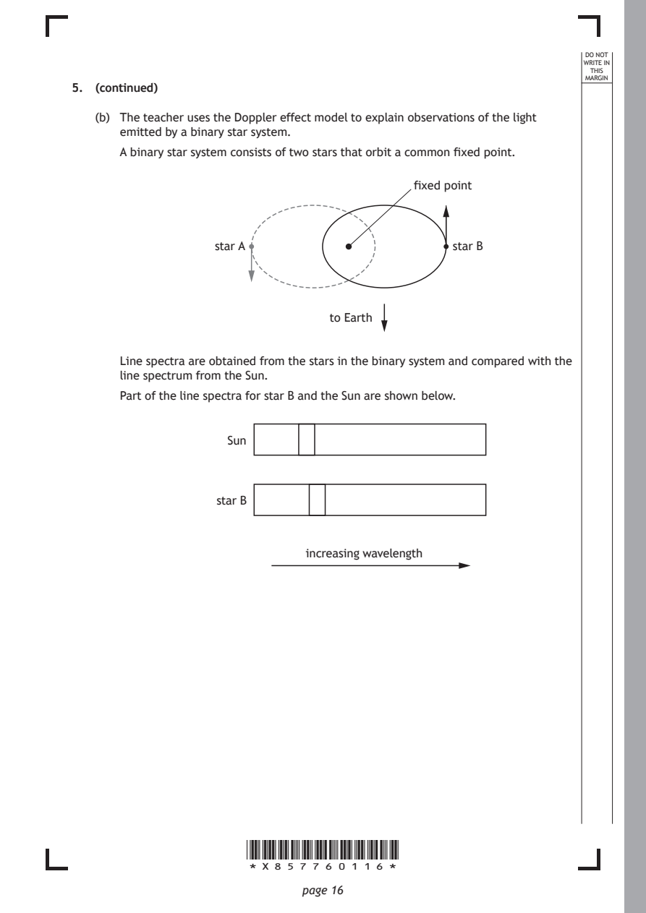
Selectable page text
DO NOT
WRITE IN
THIS
MARGIN
5. (continued)
(b) The teacher uses the Doppler effect model to explain observations of the light
emitted by a binary star system.
A binary star system consists of two stars that orbit a common fixed point.
fixed point
star A star B
to Earth
Line spectra are obtained from the stars in the binary system and compared with the
line spectrum from the Sun.
Part of the line spectra for star B and the Sun are shown below.
Sun
star B
increasing wavelength
*X857760116*
page 16PDF page 17
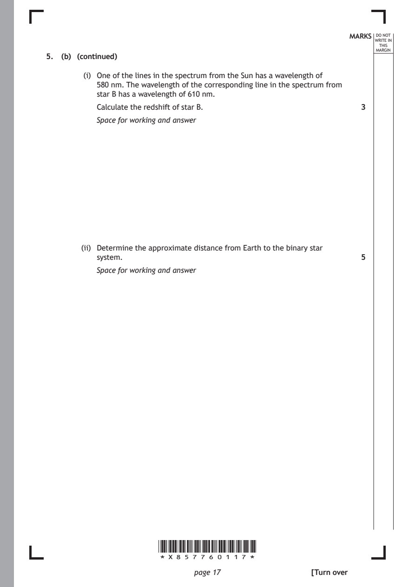
Selectable page text
MARKS _{W}^{D}_{R}^{O}_{I} _{T}^{N}OT
E IN
THIS
MARGIN
5. (b) (continued)
(i) One of the lines in the spectrum from the Sun has a wavelength of
580 nm. The wavelength of the corresponding line in the spectrum from
star B has a wavelength of 610 nm.
Calculate the redshift of star B. 3
Space for working and answer
(ii) Determine the approximate distance from Earth to the binary star
system. 5
Space for working and answer
*X857760117*
page 17 [Turn overPDF page 18
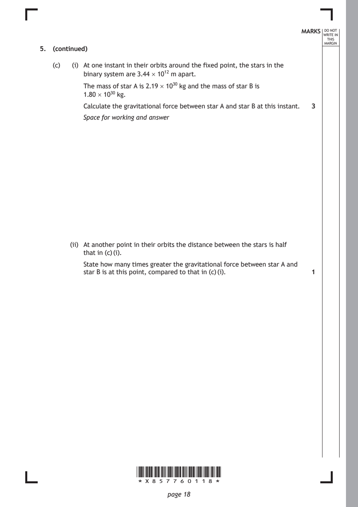
Selectable page text
MARKS _{W}^{D}_{R}^{O}_{I} _{T}^{N}OT
E IN
THIS
MARGIN
5. (continued)
(c) (i) At one instant in their orbits around the fixed point, the stars in the
binary system are 3.44 × 10¹² m apart.
The mass of star A is 2.19 × 10³⁰ kg and the mass of star B is
1.80 × 10³⁰ kg.
Calculate the gravitational force between star A and star B at this instant. 3
Space for working and answer
(ii) At another point in their orbits the distance between the stars is half
that in (c) (i).
State how many times greater the gravitational force between star A and
star B is at this point, compared to that in (c) (i). 1
*X857760118*
page 18PDF page 19
Selectable page text
[Turn over for next question
DO NOT WRITE ON THIS PAGE
*X857760119*
page 19PDF page 20
Paper 2, Question 6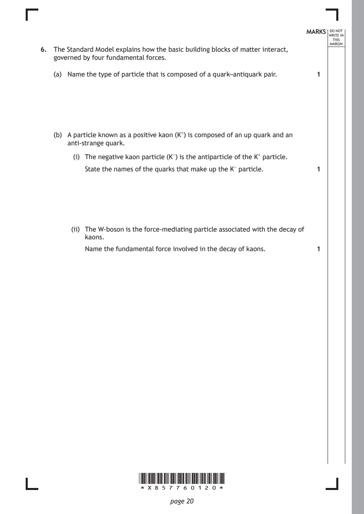
Selectable page text
MARKS _{W}^{D}_{R}^{O}_{I} _{T}^{N}OT
E IN
THIS
MARGIN
6. The Standard Model explains how the basic building blocks of matter interact,
governed by four fundamental forces.
(a) Name the type of particle that is composed of a quark–antiquark pair. 1
(b) A particle known as a positive kaon (K⁺) is composed of an up quark and an
anti-strange quark.
(i) The negative kaon particle (K⁻) is the antiparticle of the K⁺ particle.
State the names of the quarks that make up the K⁻ particle. 1
(ii) The W-boson is the force-mediating particle associated with the decay of
kaons.
Name the fundamental force involved in the decay of kaons. 1
*X857760120*
page 20PDF page 21
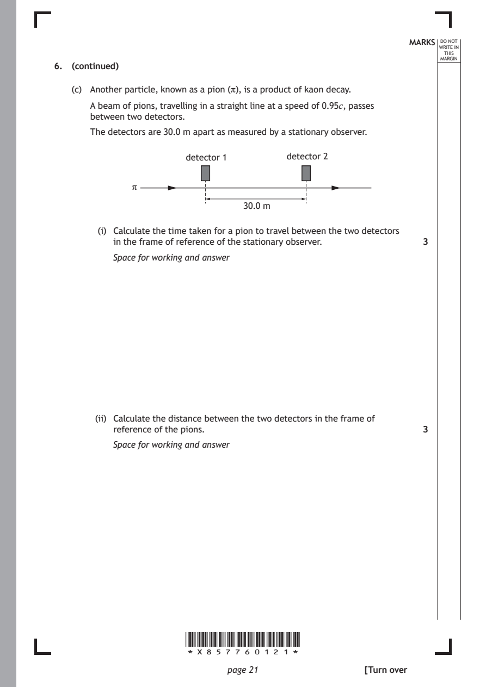
Selectable page text
MARKS _{W}^{D}_{R}^{O}_{I} _{T}^{N}OT
E IN
THIS
MARGIN
6. (continued)
(c) Another particle, known as a pion (π), is a product of kaon decay.
A beam of pions, travelling in a straight line at a speed of 0.95c, passes
between two detectors.
The detectors are 30.0 m apart as measured by a stationary observer.
detector 1 detector 2
π
30.0 m
(i) Calculate the time taken for a pion to travel between the two detectors
in the frame of reference of the stationary observer. 3
Space for working and answer
(ii) Calculate the distance between the two detectors in the frame of
reference of the pions. 3
Space for working and answer
*X857760121*
page 21 [Turn overPDF page 22
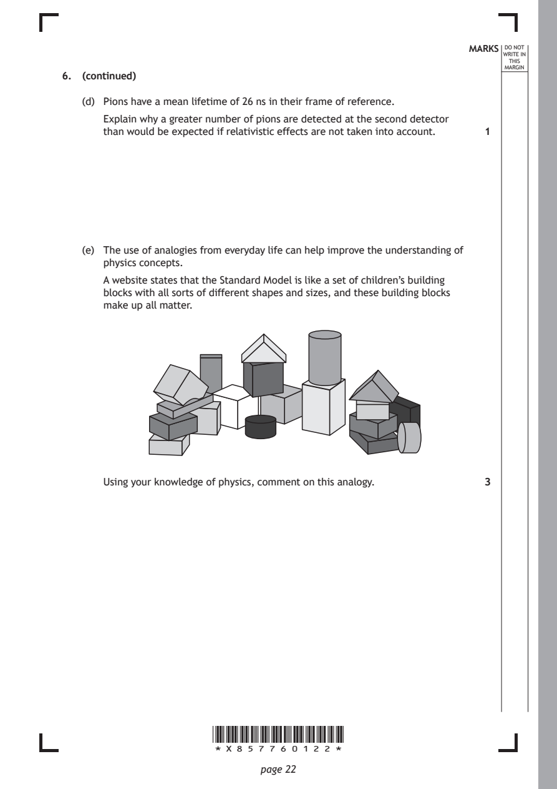
Selectable page text
MARKS _{W}^{D}_{R}^{O}_{I} _{T}^{N}OT
E IN
THIS
MARGIN
6. (continued)
(d) Pions have a mean lifetime of 26 ns in their frame of reference.
Explain why a greater number of pions are detected at the second detector
than would be expected if relativistic effects are not taken into account. 1
(e) The use of analogies from everyday life can help improve the understanding of
physics concepts.
A website states that the Standard Model is like a set of children’s building
blocks with all sorts of different shapes and sizes, and these building blocks
make up all matter.
Using your knowledge of physics, comment on this analogy. 3
*X857760122*
page 22PDF page 23
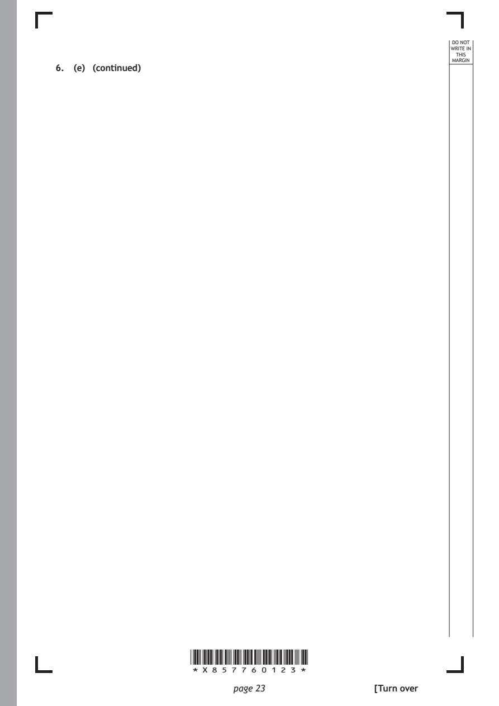
Selectable page text
DO NOT
WRITE IN
THIS
MARGIN
6. (e) (continued)
*X857760123*
page 23 [Turn overPDF page 24
Paper 2, Question 7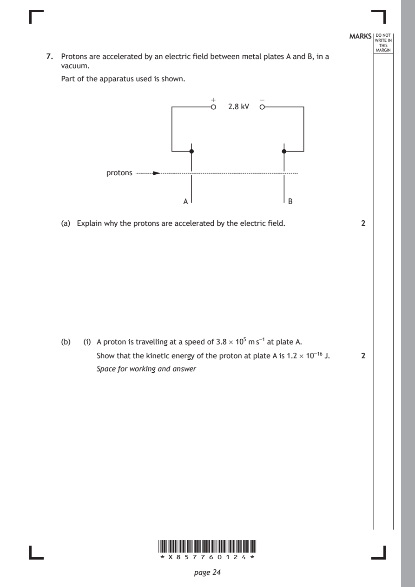
Selectable page text
MARKS _{W}^{D}_{R}^{O}_{I} _{T}^{N}OT
E IN
THIS
MARGIN
7. Protons are accelerated by an electric field between metal plates A and B, in a
vacuum.
Part of the apparatus used is shown.
+ −
2.8 kV
protons
A B
(a) Explain why the protons are accelerated by the electric field. 2
(b) (i) A proton is travelling at a speed of 3.8 × 10⁵ m s⁻¹ at plate A.
Show that the kinetic energy of the proton at plate A is 1.2 × 10⁻¹⁶ J. 2
Space for working and answer
*X857760124*
page 24PDF page 25
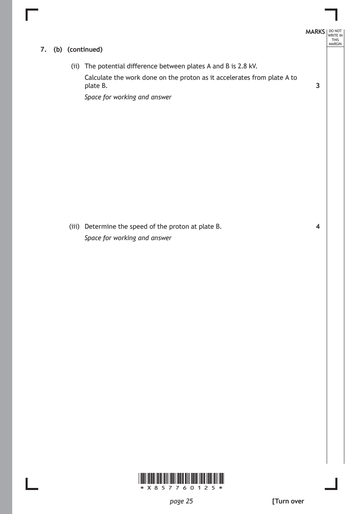
Selectable page text
MARKS _{W}^{D}_{R}^{O}_{I} _{T}^{N}OT
E IN
THIS
MARGIN
7. (b) (continued)
(ii) The potential difference between plates A and B is 2.8 kV.
Calculate the work done on the proton as it accelerates from plate A to
plate B. 3
Space for working and answer
(iii) Determine the speed of the proton at plate B. 4
Space for working and answer
*X857760125*
page 25 [Turn overPDF page 26
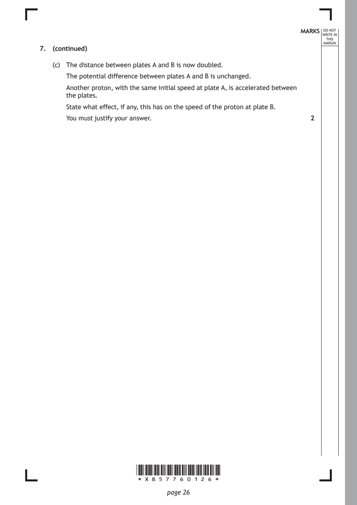
Selectable page text
MARKS _{W}^{D}_{R}^{O}_{I} _{T}^{N}OT
E IN
THIS
MARGIN
7. (continued)
(c) The distance between plates A and B is now doubled.
The potential difference between plates A and B is unchanged.
Another proton, with the same initial speed at plate A, is accelerated between
the plates.
State what effect, if any, this has on the speed of the proton at plate B.
You must justify your answer. 2
*X857760126*
page 26PDF page 27
Selectable page text
[Turn over for next question
DO NOT WRITE ON THIS PAGE
*X857760127*
page 27PDF page 28
Paper 2, Question 8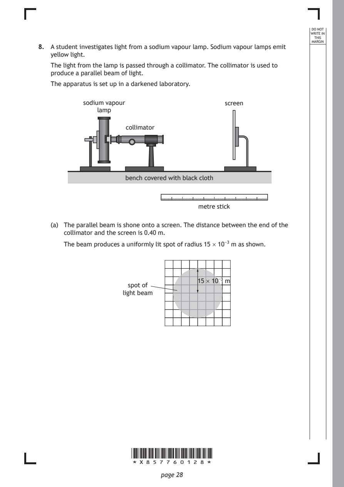
Selectable page text
DO NOT
WRITE IN
THIS
MARGIN
8. A student investigates light from a sodium vapour lamp. Sodium vapour lamps emit
yellow light.
The light from the lamp is passed through a collimator. The collimator is used to
produce a parallel beam of light.
The apparatus is set up in a darkened laboratory.
sodium vapour screen
lamp
collimator
bench covered with black cloth
metre stick
(a) The parallel beam is shone onto a screen. The distance between the end of the
collimator and the screen is 0.40 m.
The beam produces a uniformly lit spot of radius 15 × 10⁻³ m as shown.
15 × 10⁻³ m
spot of
light beam
*X857760128*
page 28PDF page 29
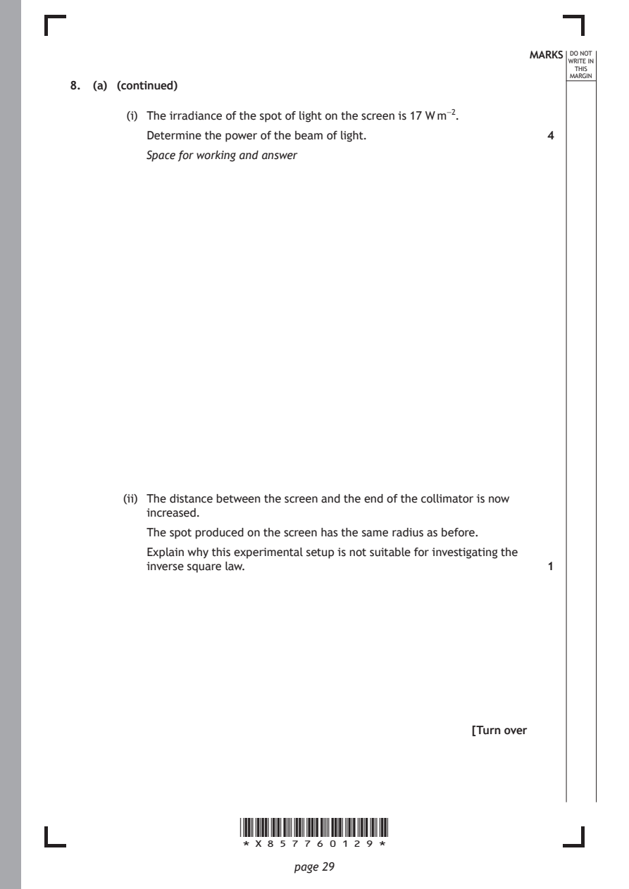
Selectable page text
MARKS _{W}^{D}_{R}^{O}_{I} _{T}^{N}OT
E IN
THIS
MARGIN
8. (a) (continued)
(i) The irradiance of the spot of light on the screen is 17 W m⁻².
Determine the power of the beam of light. 4
Space for working and answer
(ii) The distance between the screen and the end of the collimator is now
increased.
The spot produced on the screen has the same radius as before.
Explain why this experimental setup is not suitable for investigating the
inverse square law. 1
[Turn over
*X857760129*
page 29PDF page 30
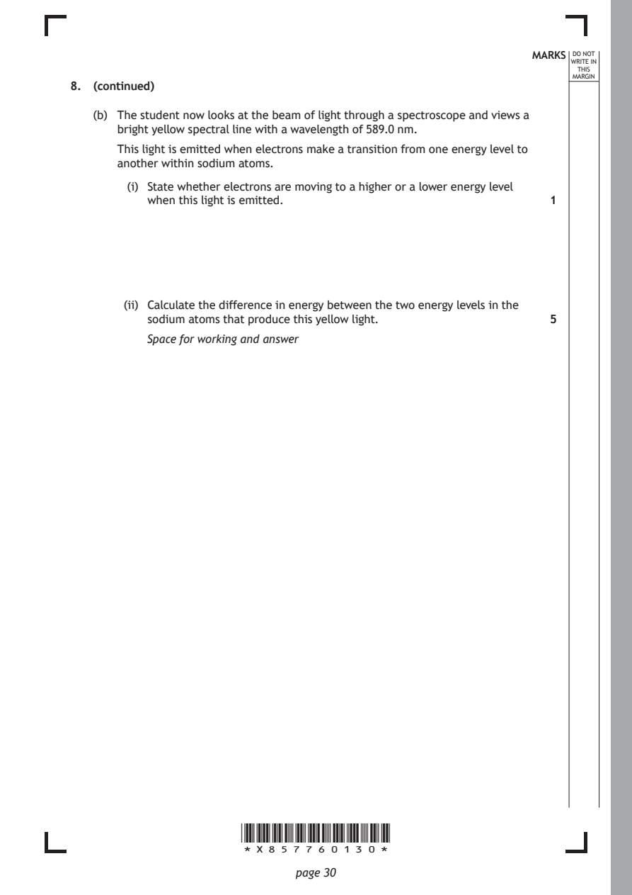
Selectable page text
MARKS _{W}^{D}_{R}^{O}_{I} _{T}^{N}OT
E IN
THIS
MARGIN
8. (continued)
(b) The student now looks at the beam of light through a spectroscope and views a
bright yellow spectral line with a wavelength of 589.0 nm.
This light is emitted when electrons make a transition from one energy level to
another within sodium atoms.
(i) State whether electrons are moving to a higher or a lower energy level
when this light is emitted. 1
(ii) Calculate the difference in energy between the two energy levels in the
sodium atoms that produce this yellow light. 5
Space for working and answer
*X857760130*
page 30PDF page 31
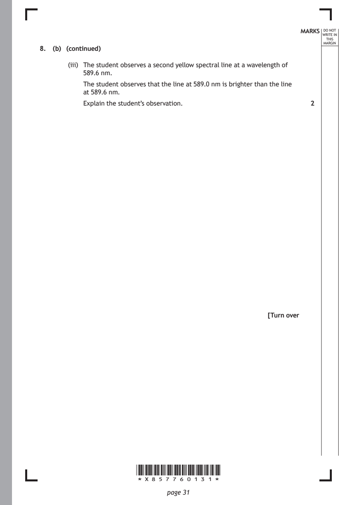
Selectable page text
MARKS _{W}^{D}_{R}^{O}_{I} _{T}^{N}OT
E IN
THIS
MARGIN
8. (b) (continued)
(iii) The student observes a second yellow spectral line at a wavelength of
589.6 nm.
The student observes that the line at 589.0 nm is brighter than the line
at 589.6 nm.
Explain the student’s observation. 2
[Turn over
*X857760131*
page 31PDF page 32
Paper 2, Question 9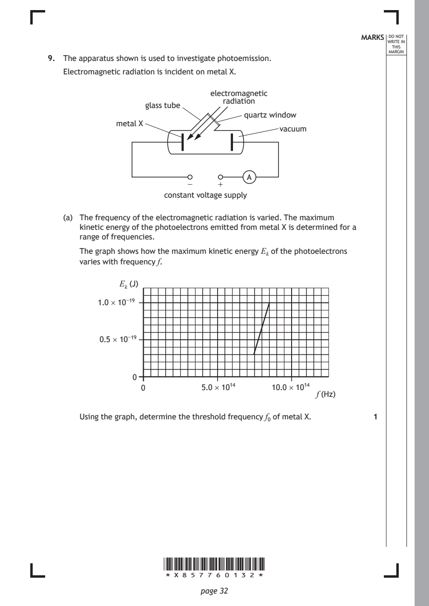
Selectable page text
MARKS _{W}^{D}_{R}^{O}_{I} _{T}^{N}OT
E IN
THIS
MARGIN
9. The apparatus shown is used to investigate photoemission.
Electromagnetic radiation is incident on metal X.
electromagnetic
radiation
glass tube
quartz window
metal X
vacuum
A
− +
constant voltage supply
(a) The frequency of the electromagnetic radiation is varied. The maximum
kinetic energy of the photoelectrons emitted from metal X is determined for a
range of frequencies.
The graph shows how the maximum kinetic energy Eₖ of the photoelectrons
varies with frequency f.
Eₖ (J)
1.0 × 10⁻¹⁹
0.5 × 10⁻¹⁹
0
0 5.0 × 10¹⁴ 10.0 × 10¹⁴
f (Hz)
Using the graph, determine the threshold frequency f₀ of metal X. 1
*X857760132*
page 32PDF page 33
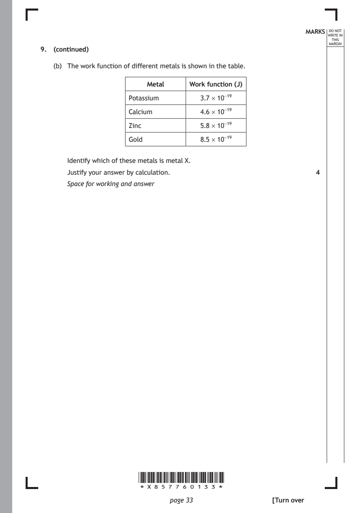
Selectable page text
MARKS _{W}^{D}_{R}^{O}_{I} _{T}^{N}OT
E IN
THIS
MARGIN
9. (continued)
(b) The work function of different metals is shown in the table.
Metal Work function (J)
Potassium 3.7 × 10⁻¹⁹
Calcium 4.6 × 10⁻¹⁹
Zinc 5.8 × 10⁻¹⁹
Gold 8.5 × 10⁻¹⁹
Identify which of these metals is metal X.
Justify your answer by calculation. 4
Space for working and answer
*X857760133*
page 33 [Turn overPDF page 34
Paper 2, Question 10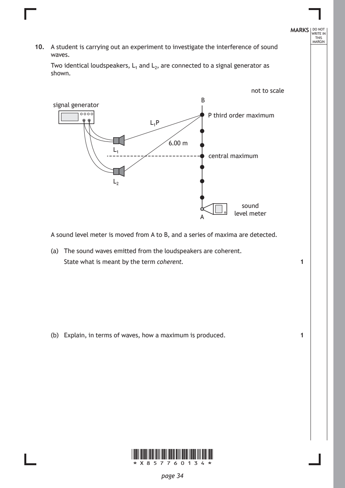
Selectable page text
MARKS _{W}^{D}_{R}^{O}_{I} _{T}^{N}OT
E IN
THIS
MARGIN
10. A student is carrying out an experiment to investigate the interference of sound
waves.
Two identical loudspeakers, L₁ and L₂, are connected to a signal generator as
shown.
not to scale
B
signal generator
P third order maximum
L₁P
6.00 m
L₁
central maximum
L₂
sound
level meter
A
A sound level meter is moved from A to B, and a series of maxima are detected.
(a) The sound waves emitted from the loudspeakers are coherent.
State what is meant by the term coherent. 1
(b) Explain, in terms of waves, how a maximum is produced. 1
*X857760134*
page 34PDF page 35
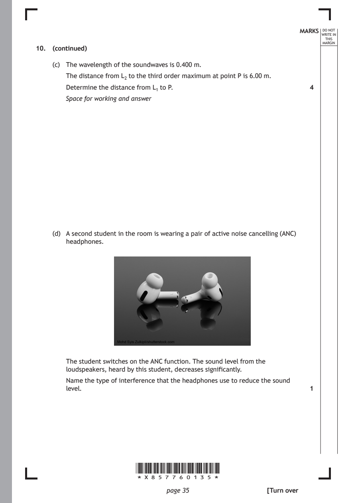
Selectable page text
MARKS _{W}^{D}_{R}^{O}_{I} _{T}^{N}OT
E IN
THIS
MARGIN
10. (continued)
(c) The wavelength of the soundwaves is 0.400 m.
The distance from L₂ to the third order maximum at point P is 6.00 m.
Determine the distance from L₁ to P. 4
Space for working and answer
(d) A second student in the room is wearing a pair of active noise cancelling (ANC)
headphones.
The student switches on the ANC function. The sound level from the
loudspeakers, heard by this student, decreases significantly.
Name the type of interference that the headphones use to reduce the sound
level. 1
*X857760135*
page 35 [Turn overPDF page 36
Paper 2, Question 11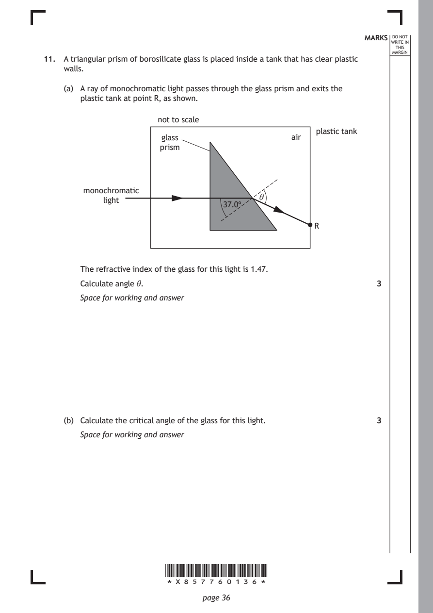
Selectable page text
MARKS _{W}^{D}_{R}^{O}_{I} _{T}^{N}OT
E IN
THIS
MARGIN
11. A triangular prism of borosilicate glass is placed inside a tank that has clear plastic
walls.
(a) A ray of monochromatic light passes through the glass prism and exits the
plastic tank at point R, as shown.
not to scale
plastic tank
glass air
prism
monochromatic
θ
light
37.0º
R
The refractive index of the glass for this light is 1.47.
Calculate angle θ. 3
Space for working and answer
(b) Calculate the critical angle of the glass for this light. 3
Space for working and answer
*X857760136*
page 36PDF page 37
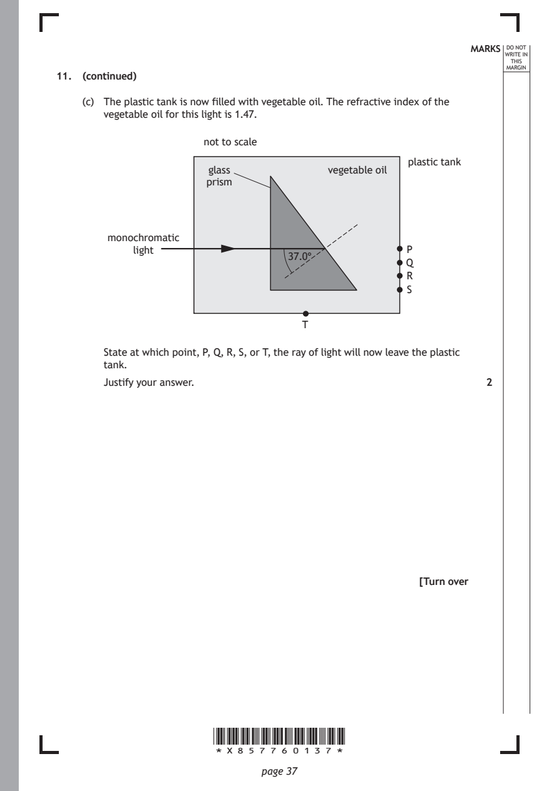
Selectable page text
MARKS _{W}^{D}_{R}^{O}_{I} _{T}^{N}OT
E IN
THIS
MARGIN
11. (continued)
(c) The plastic tank is now filled with vegetable oil. The refractive index of the
vegetable oil for this light is 1.47.
not to scale
plastic tank
glass vegetable oil
prism
monochromatic
light P
37.0°
Q
R
S
T
State at which point, P, Q, R, S, or T, the ray of light will now leave the plastic
tank.
Justify your answer. 2
[Turn over
*X857760137*
page 37PDF page 38
Paper 2, Question 12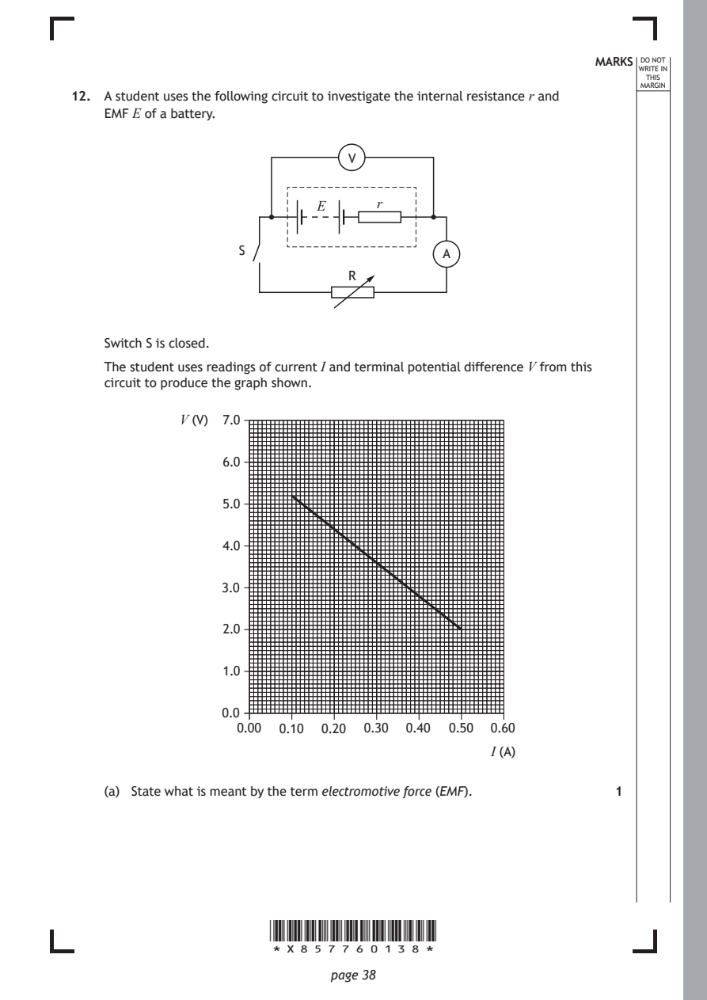
Selectable page text
MARKS _{W}^{D}_{R}^{O}_{I} _{T}^{N}OT
E IN
THIS
MARGIN
12. A student uses the following circuit to investigate the internal resistance r and
EMF E of a battery.
VV
E r
S A
R
Switch S is closed.
The student uses readings of current I and terminal potential difference V from this
circuit to produce the graph shown.
V (V) 7.0
6.0
5.0
4.0
3.0
2.0
1.0
0.0
0.00 0.10 0.20 0.30 0.40 0.50 0.60
I (A)
(a) State what is meant by the term electromotive force (EMF). 1
*X857760138*
page 38PDF page 39
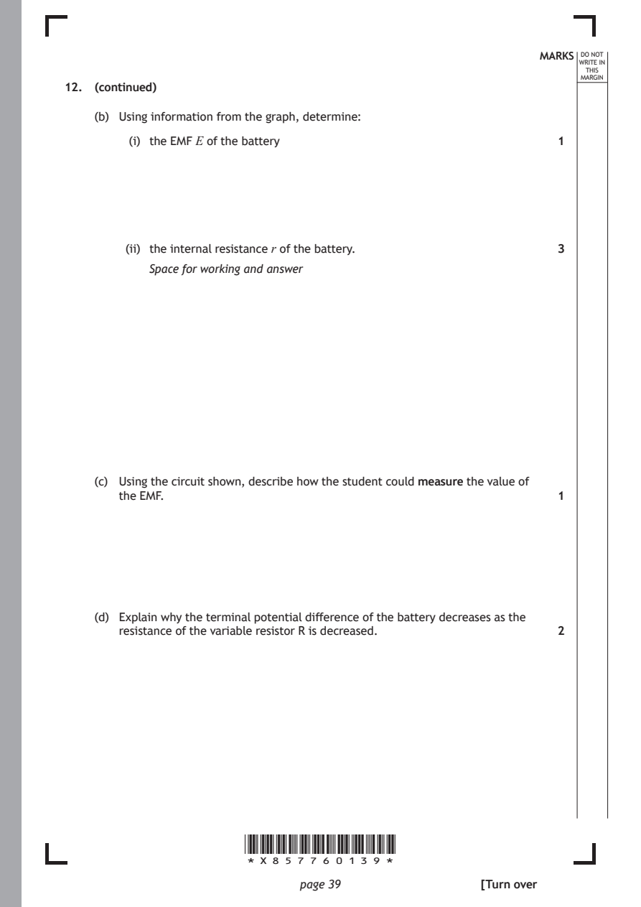
Selectable page text
MARKS _{W}^{D}_{R}^{O}_{I} _{T}^{N}OT
E IN
THIS
MARGIN
12. (continued)
(b) Using information from the graph, determine:
(i) the EMF E of the battery 1
(ii) the internal resistance r of the battery. 3
Space for working and answer
(c) Using the circuit shown, describe how the student could measure the value of
the EMF. 1
(d) Explain why the terminal potential difference of the battery decreases as the
resistance of the variable resistor R is decreased. 2
*X857760139*
page 39 [Turn overPDF page 40
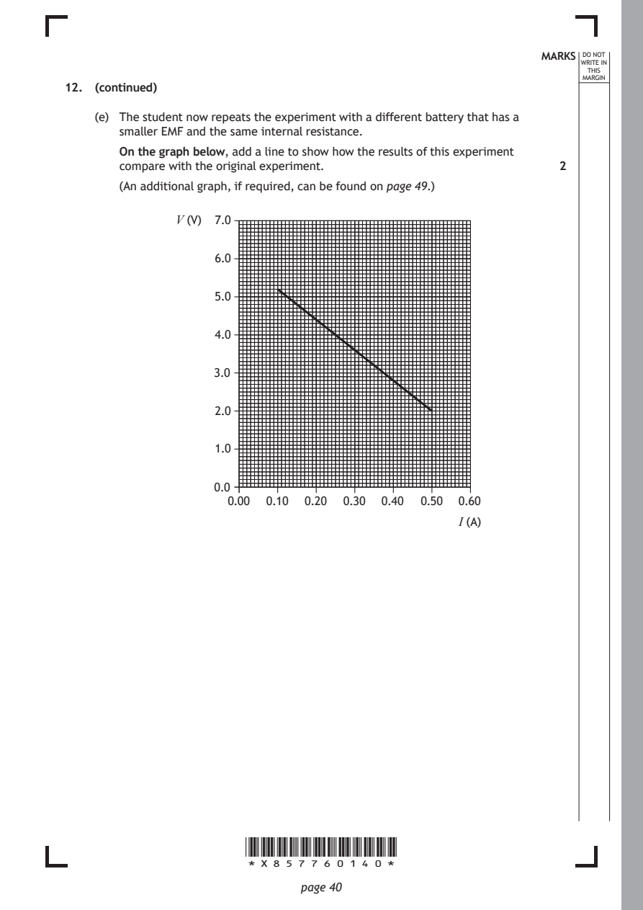
Selectable page text
MARKS _{W}^{D}_{R}^{O}_{I} _{T}^{N}OT
E IN
THIS
MARGIN
12. (continued)
(e) The student now repeats the experiment with a different battery that has a
smaller EMF and the same internal resistance.
On the graph below, add a line to show how the results of this experiment
compare with the original experiment. 2
(An additional graph, if required, can be found on page 49.)
V (V) 7.0
6.0
5.0
4.0
3.0
2.0
1.0
0.0
0.00 0.10 0.20 0.30 0.40 0.50 0.60
I (A)
*X857760140*
page 40PDF page 41
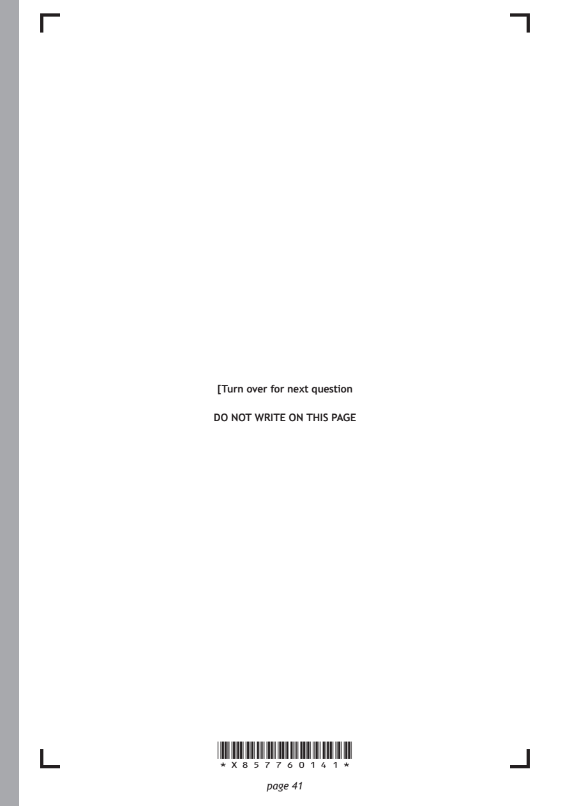
Selectable page text
[Turn over for next question
DO NOT WRITE ON THIS PAGE
*X857760141*
page 41PDF page 42
Paper 2, Question 13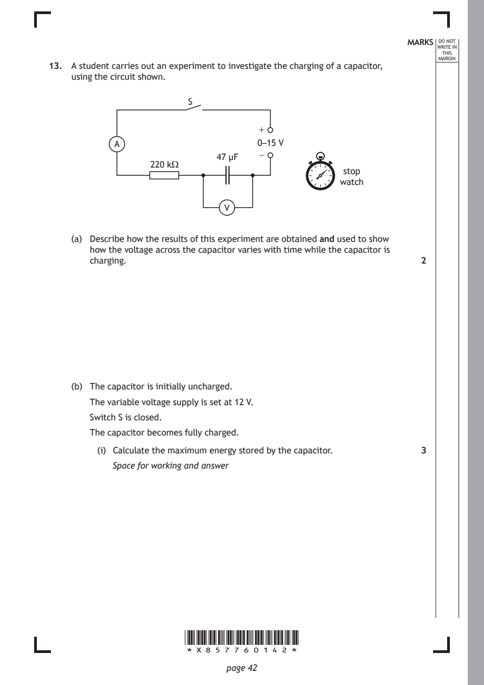
Selectable page text
MARKS _{W}^{D}_{R}^{O}_{I} _{T}^{N}OT
E IN
THIS
MARGIN
13. A student carries out an experiment to investigate the charging of a capacitor,
using the circuit shown.
S
+
A 0–15 V
−
47 μF
220 kΩ
stop
watch
V
(a) Describe how the results of this experiment are obtained and used to show
how the voltage across the capacitor varies with time while the capacitor is
charging. 2
(b) The capacitor is initially uncharged.
The variable voltage supply is set at 12 V.
Switch S is closed.
The capacitor becomes fully charged.
(i) Calculate the maximum energy stored by the capacitor. 3
Space for working and answer
*X857760142*
page 42PDF page 43
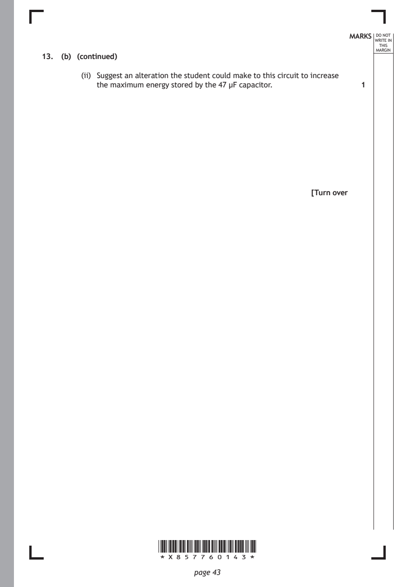
Selectable page text
MARKS _{W}^{D}_{R}^{O}_{I} _{T}^{N}OT
E IN
THIS
MARGIN
13. (b) (continued)
(ii) Suggest an alteration the student could make to this circuit to increase
the maximum energy stored by the 47 µF capacitor. 1
[Turn over
*X857760143*
page 43PDF page 44
Paper 2, Question 14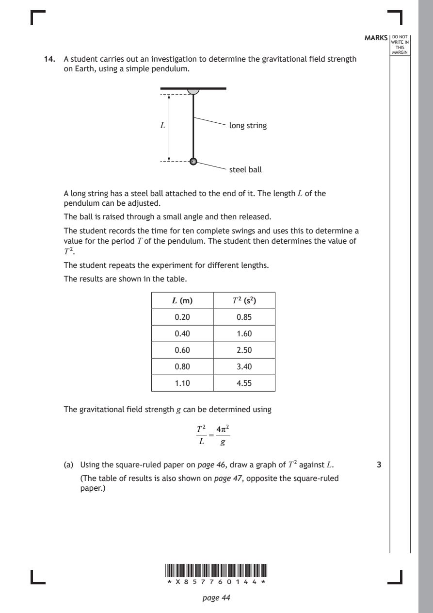
Selectable page text
MARKS _{W}^{D}_{R}^{O}_{I} _{T}^{N}OT
E IN
THIS
MARGIN
14. A student carries out an investigation to determine the gravitational field strength
on Earth, using a simple pendulum.
L long string
steel ball
A long string has a steel ball attached to the end of it. The length L of the
pendulum can be adjusted.
The ball is raised through a small angle and then released.
The student records the time for ten complete swings and uses this to determine a
value for the period T of the pendulum. The student then determines the value of
T ².
The student repeats the experiment for different lengths.
The results are shown in the table.
L (m) T ² (s²)
0.20 0.85
0.40 1.60
0.60 2.50
0.80 3.40
1.10 4.55
The gravitational field strength g can be determined using
T² 4π²
=
L g
(a) Using the square-ruled paper on page 46, draw a graph of T ² against L. 3
(The table of results is also shown on page 47, opposite the square-ruled
paper.)
*X857760144*
page 44PDF page 45
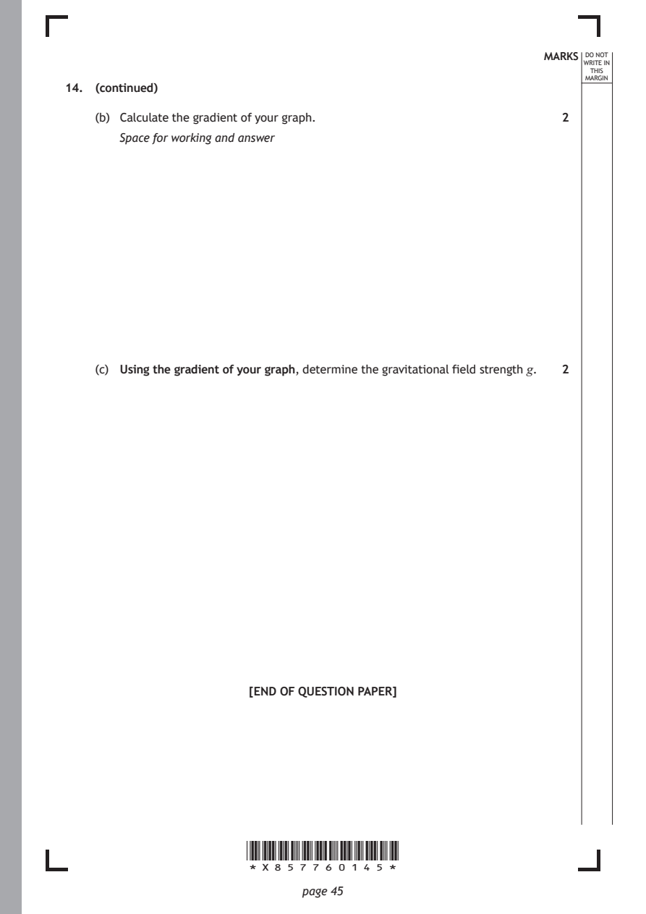
Selectable page text
MARKS _{W}^{D}_{R}^{O}_{I} _{T}^{N}OT
E IN
THIS
MARGIN
14. (continued)
(b) Calculate the gradient of your graph. 2
Space for working and answer
(c) Using the gradient of your graph, determine the gravitational field strength g. 2
[END OF QUESTION PAPER]
*X857760145*
page 45PDF page 46
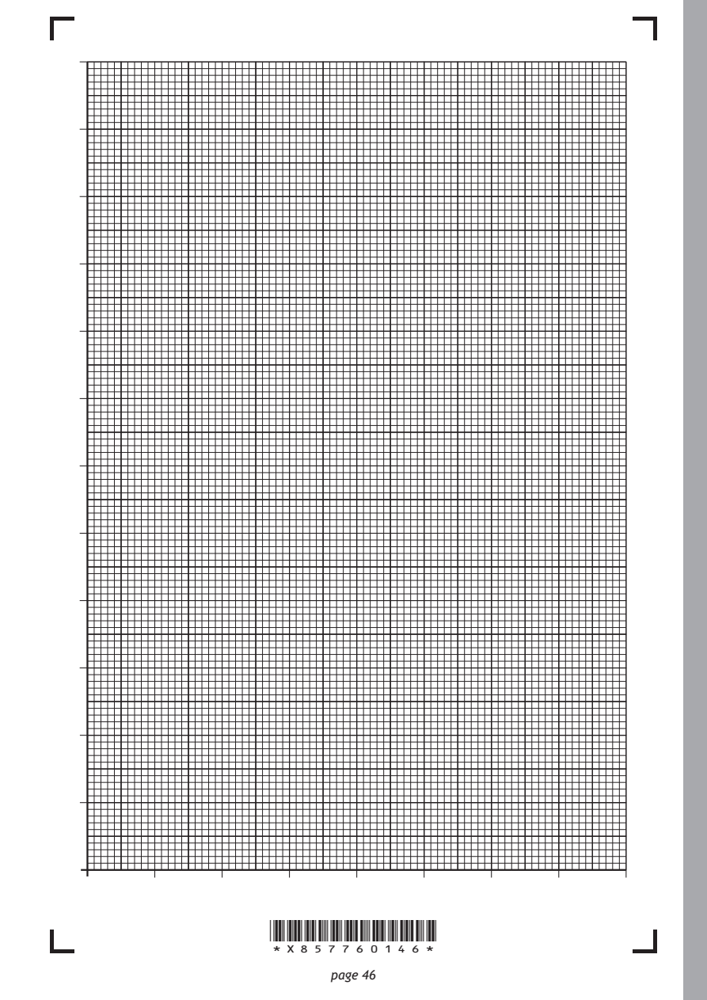
Selectable page text
*X857760146*
page 46PDF page 47
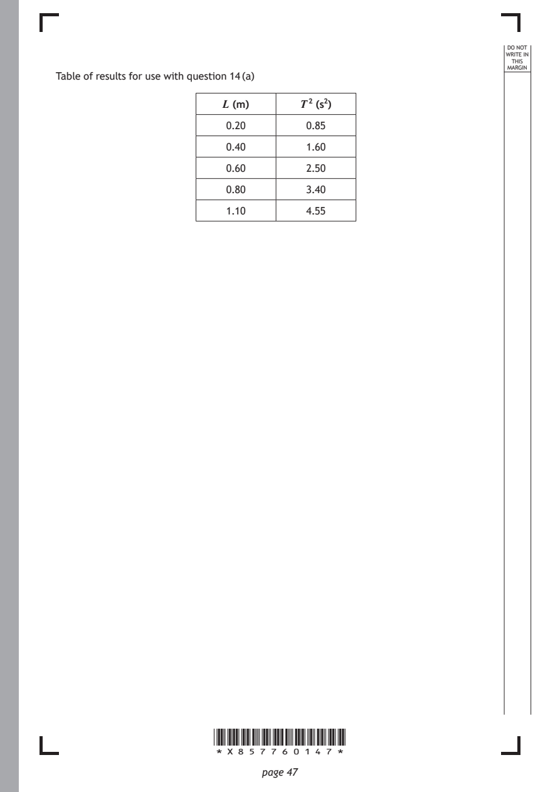
Selectable page text
DO NOT
WRITE IN
THIS
MARGIN
Table of results for use with question 14 (a)
L (m) T ² (s²)
0.20 0.85
0.40 1.60
0.60 2.50
0.80 3.40
1.10 4.55
*X857760147*
page 47PDF page 48
Selectable page text
*X857760148*
page 48PDF page 49
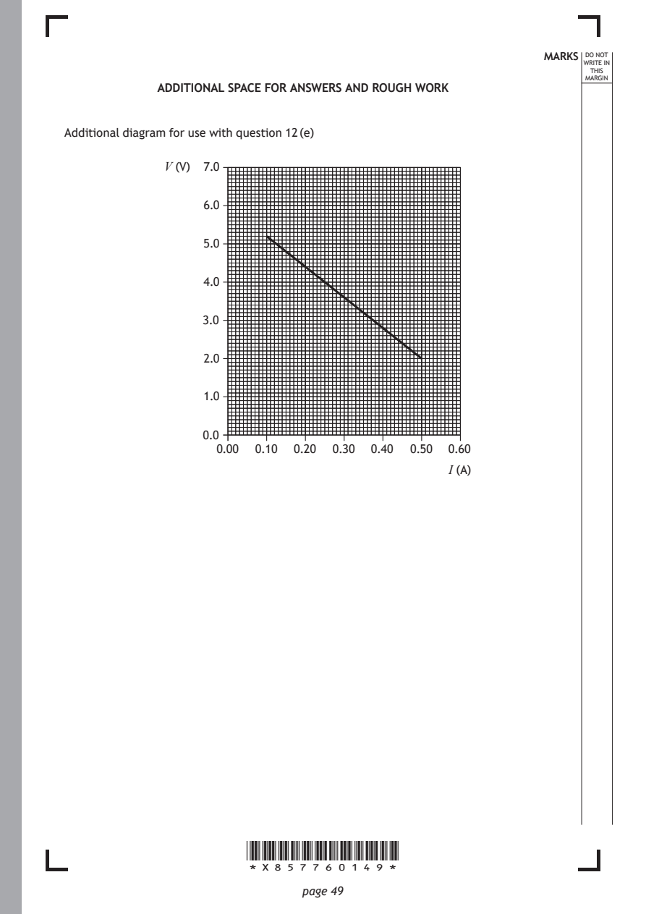
Selectable page text
MARKS _{W}^{D}_{R}^{O}_{I} _{T}^{N}OT
E IN
THIS
MARGIN
ADDITIONAL SPACE FOR ANSWERS AND ROUGH WORK
Additional diagram for use with question 12 (e)
V (V) 7.0
6.0
5.0
4.0
3.0
2.0
1.0
0.0
0.00 0.10 0.20 0.30 0.40 0.50 0.60
I (A)
*X857760149*
page 49PDF page 50
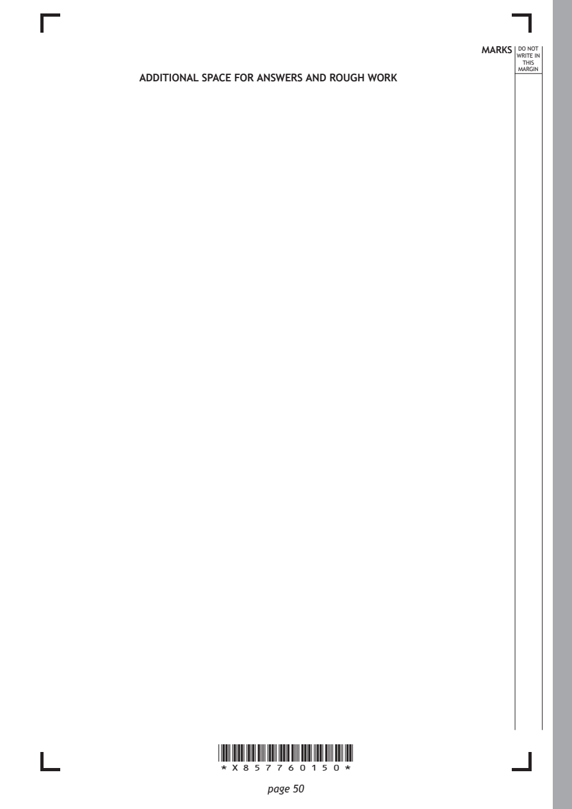
Selectable page text
MARKS _{W}^{D}_{R}^{O}_{I} _{T}^{N}OT
E IN
THIS
MARGIN
ADDITIONAL SPACE FOR ANSWERS AND ROUGH WORK
*X857760150*
page 50PDF page 51
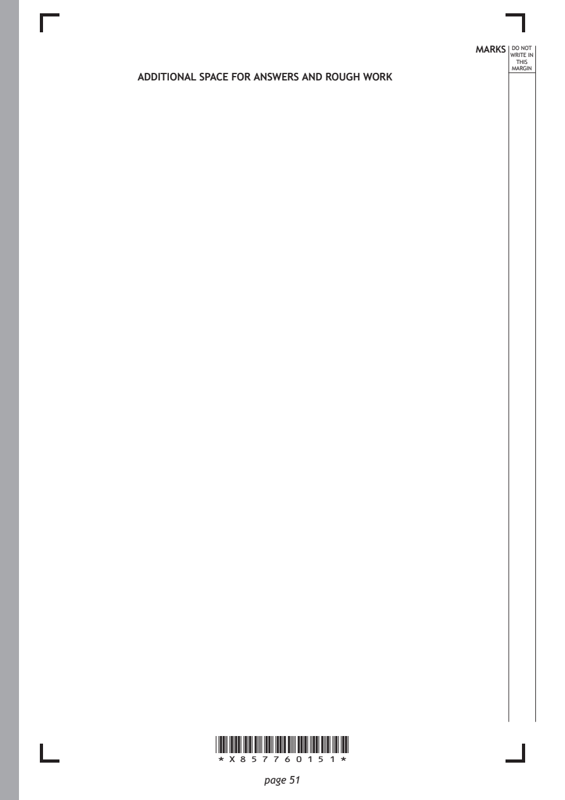
Selectable page text
MARKS _{W}^{D}_{R}^{O}_{I} _{T}^{N}OT
E IN
THIS
MARGIN
ADDITIONAL SPACE FOR ANSWERS AND ROUGH WORK
*X857760151*
page 51PDF page 52
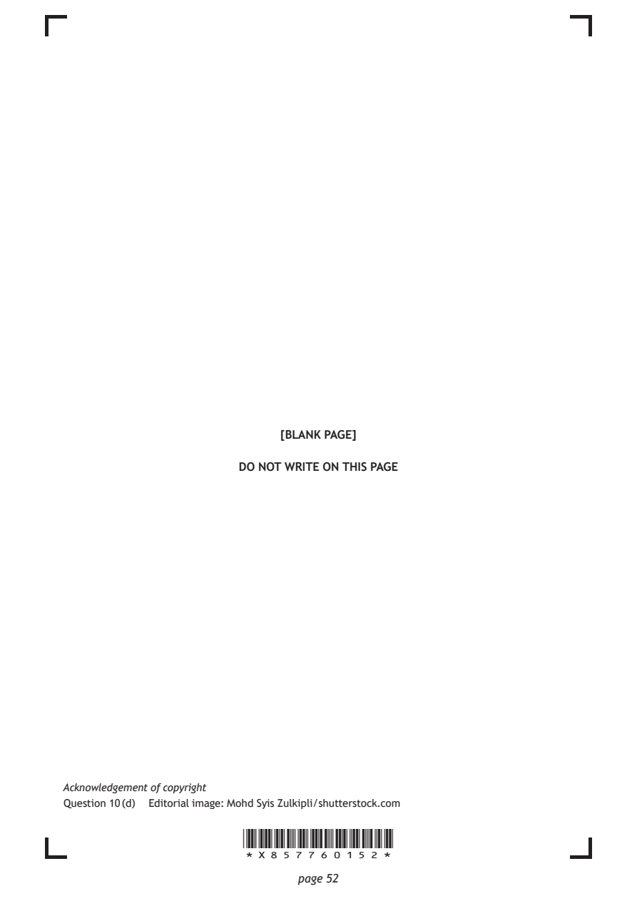
Selectable page text
[BLANK PAGE]
DO NOT WRITE ON THIS PAGE
Acknowledgement of copyright
Question 10 (d) Editorial image: Mohd Syis Zulkipli/shutterstock.com
*X857760152*
page 52